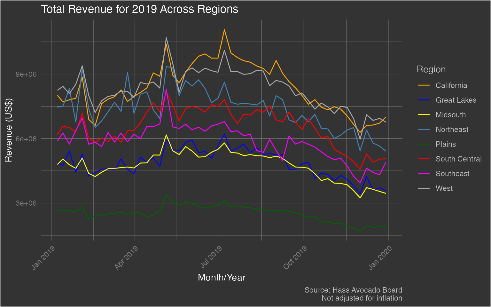

Analyzing Hass Region
b_analyze-hass-region.RmdThe {avocado} package provides a weekly summary - starting from January 2017 through November 2020 - of Hass Avocado sales. There are three datasets in this package and let’s start with the dataset hass_region which focuses on weekly avocado sales in various regions (as defined by the Hass Avocado Board) of the contiguous US.
Let’s start by loading the package - along with {dplyr} (for data wrangling) and {ggplot} (for data visualization) - and exploring it’s structure
library(avocado)
library(dplyr)
#>
#> Attaching package: 'dplyr'
#> The following objects are masked from 'package:stats':
#>
#> filter, lag
#> The following objects are masked from 'package:base':
#>
#> intersect, setdiff, setequal, union
library(ggplot2)
data('hass_region')
dplyr::glimpse(hass_region)
#> Rows: 1,576
#> Columns: 16
#> $ week_ending <dttm> 2017-01-02, 2017-01-02, 2017-01-02, 2017-01-02, 20…
#> $ region <chr> "California", "Great Lakes", "Midsouth", "Northeast…
#> $ avg_price_nonorg <dbl> 0.89, 0.88, 1.12, 1.35, 0.83, 0.64, 0.94, 0.79, 1.0…
#> $ plu4046 <dbl> 2266313.4, 636277.7, 653896.0, 174842.6, 1462454.2,…
#> $ plu4225 <dbl> 2877688.3, 2157249.6, 1285364.3, 2589315.7, 509659.…
#> $ plu4770 <dbl> 90899.53, 189356.95, 64703.08, 39606.96, 4780.52, 2…
#> $ small_nonorg_bag <dbl> 1762033.7, 885769.2, 719379.6, 659611.8, 387098.0, …
#> $ large_nonorg_bag <dbl> 151333.95, 349032.80, 151226.51, 49532.71, 13008.21…
#> $ xlarge_nonorg_bag <dbl> 27007.76, 7559.14, 4398.04, 478.61, 5742.12, 16334.…
#> $ avg_price_org <dbl> 1.46, 1.44, 1.72, 2.00, 1.62, 1.23, 1.43, 1.19, 1.5…
#> $ plu94046 <dbl> 31267.65, 4104.86, 3353.64, 9132.13, 4547.17, 22474…
#> $ plu94225 <dbl> 65430.27, 69800.29, 36090.72, 36276.39, 15245.73, 4…
#> $ plu94770 <dbl> 6.16, 0.00, 1813.60, 923.53, 1366.36, 17.37, 262.28…
#> $ small_org_bag <dbl> 50963.98, 23593.03, 29203.33, 65447.53, 17253.74, 3…
#> $ large_org_bag <dbl> 16468.98, 6655.73, 1826.50, 3476.51, 8629.21, 1968.…
#> $ xlarge_org_bag <dbl> 0, 0, 0, 0, 0, 0, 0, 0, 0, 0, 0, 0, 0, 0, 0, 0, 0, …Exploratory Data Analysis
Let’s begin by exploring the following two topics:
- Top Region by Revenue in 2019 & all time
- Proportion of Revenue by Region of all time
Top Region by Sales Revenue in 2019
hass_region %>%
mutate(
year = lubridate::year(week_ending)
) %>%
filter(year == 2019) %>%
group_by(year, region) %>%
summarize(
total_revenue = sum((avg_price_nonorg)*(plu4046 + plu4225 + plu4770 + small_nonorg_bag + large_nonorg_bag + xlarge_nonorg_bag) + (avg_price_org)*(plu94046 + plu94225 + plu94770 + small_org_bag + large_org_bag + xlarge_org_bag)),
.groups = 'drop'
) %>%
slice(which.max(total_revenue))
#> # A tibble: 1 x 3
#> year region total_revenue
#> <dbl> <chr> <dbl>
#> 1 2019 California 434629996.Surprising to see that the state of California has more revenue from Avocado sales than all the other regions combined. Let’s take a look at this for all regions in 2019.
hass_region %>%
mutate(
year = lubridate::year(week_ending)
) %>%
filter(year == 2019) %>%
group_by(week_ending, region) %>%
summarize(
total_revenue = sum((avg_price_nonorg)*(plu4046 + plu4225 + plu4770 + small_nonorg_bag + large_nonorg_bag + xlarge_nonorg_bag) + (avg_price_org)*(plu94046 + plu94225 + plu94770 + small_org_bag + large_org_bag + xlarge_org_bag)),
.groups = 'drop'
) %>%
ggplot(aes(x = week_ending)) +
geom_line(aes(y = total_revenue, color = region)) +
labs(x = 'Month/Year', y = 'Revenue (US$)', title = 'Total Revenue for 2019 Across Regions', caption = 'Source: Hass Avocado Board\nNot adjusted for inflation') +
scale_color_manual(name = 'Region', values = c('California' = 'orange', 'Great Lakes' = 'blue', 'Midsouth' = 'yellow', 'Northeast' = 'steelblue', 'Plains' = 'darkgreen', 'South Central' = 'red', 'Southeast' = 'magenta', 'West' = 'darkgray')) +
theme(plot.background = element_rect(fill = "grey20"),
plot.title = element_text(color = "#FFFFFF"),
axis.title = element_text(color = "#FFFFFF"),
axis.text.x = element_text(color = 'grey50', angle = 45, hjust = 1),
axis.text.y = element_text(color = 'grey50'),
plot.caption = element_text(color = 'grey75'),
panel.background = element_blank(),
panel.grid.major = element_line(color = "grey50", size = 0.2),
panel.grid.minor = element_line(color = "grey50", size = 0.2),
legend.background = element_rect(fill = 'grey20'),
legend.key = element_rect(fill = 'grey20'),
legend.title = element_text(color = 'grey75'),
legend.text = element_text(color = 'grey75')
) Interestingly, California and the West regions are fairly close. Oddly, the Plains region seems to have the lowest revenue. It’s so low, that it almost appears to be anomalous - but I digress.
Proportion of Revenue (All Time)
If we consider the entire dataset, what percentage of contribution to total revenue does each region make? Let’s find out.
hass_region %>%
group_by(region) %>%
summarize(
total_revenue = sum((avg_price_nonorg)*(plu4046 + plu4225 + plu4770 + small_nonorg_bag + large_nonorg_bag + xlarge_nonorg_bag) + (avg_price_org)*(plu94046 + plu94225 + plu94770 + small_org_bag + large_org_bag + xlarge_org_bag)),
.groups = 'drop'
) %>%
arrange(desc(region)) %>%
mutate(
prop = round(total_revenue / sum(total_revenue) * 100),
ypos = cumsum(prop) - (0.5*prop),
txt = paste0(region, ': ', prop,'%')
) %>%
ggplot(aes(x = "", y = prop, fill = region)) +
geom_bar(stat = 'identity', width = 1, color = 'white') +
coord_polar(theta = 'y') +
theme_void() +
ggrepel::geom_label_repel(aes(y = ypos, label = txt), show.legend = FALSE, color = 'black', size = 3, nudge_x = 1) +
labs(title = 'Revenue Proportion by Region', caption = 'Source: Hass Avocado Board') +
theme(
# plot.background = element_rect(fill = "grey20"),
plot.title = element_text(color = "#000000"),
plot.caption = element_text(color = 'grey75'),
panel.background = element_blank(),
legend.position = 'none'
)